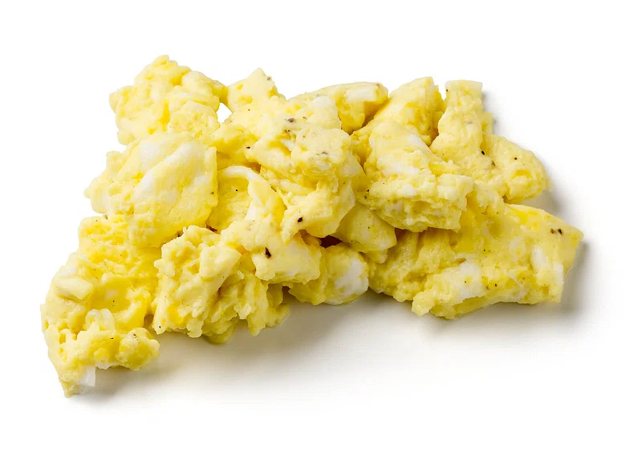

If you look around the internet in search of the best scrambled eggs recipe, you will find a million sites claiming to have it.
Don't be fooled, when it comes to scrambled eggs, “best” is a matter of personal taste.
You can load them up with butter or sour cream, or just keep them simple like me.